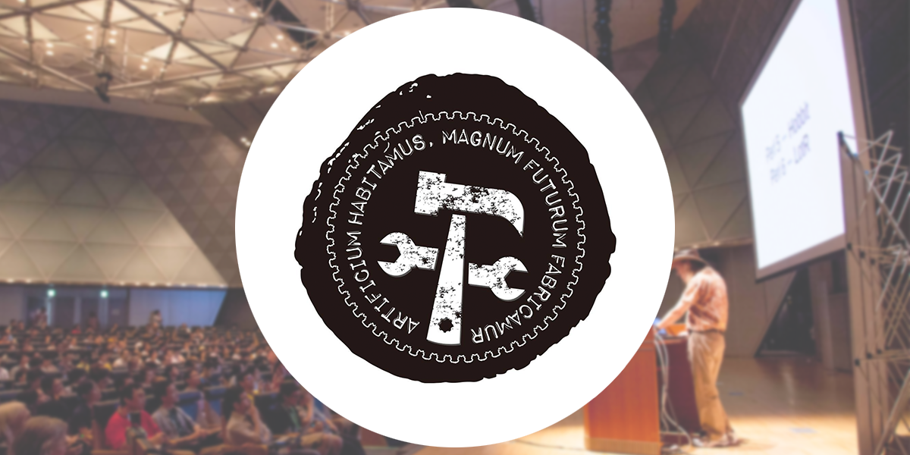

Buildersconやりませんか？

Buildersconやりませんか？
tl;dr: こういうカンファレンスやりたいと思ってるんだけど、一緒にやろう！手伝うよ！スポンサーになるよ！って人いませんか？
また、2月くらいに食事会・雑談会をしたいと思います。興味ある方は連絡ください！
YAPC::Asia Tokyo 2015を終えて
カンファレンス運営のことを毎晩考えずに済むようになって４ヶ月が経とうとしている。
やってみないとわからないと思うけど予算があってその範囲内におさめるのではなく、何もないところから始めてその分のお金を集めて…って結構胃にくる。なのでそれについて考えなくてよい日々というのは本当に静かで素晴らしかった。カンファレンス運営をする必要がなかったので真面目にエンジニアしてました。
でもボチボチ充電も出来てきました。なのでここいらでbuildersconについてまじめに考え始めたい。そして願わくば賛同者がいればそろそろ準備のために動き出したい。
What Is Builderscon?
YAPC::Asia Tokyo 2015のクロージングで話したけど、こういうサイトを作ってある。まだプレースホルダーなので詳しくは描いてない
ロゴマークは昨年のYAPC::Asia Tokyo 2015前に急遽 Design 24Cの小林さんに作ってもらったものです。文章はラテン語で、友達の@vmbrasseur さんに翻訳してもらいました。
artificium habitums, magnum futurum fabicamur.
— ”with technology we live, better future we build”
「我々は技術とともに生き、よりよい未来を創造する」
buildersconはこれをスローガンとしたイベントです。
buildersconでやりたいことは「エンジニアによる、エンジニアのための」カンファレンスです。。あれ？どこかで聞いたことある？そうですね、何年か前のYAPC::Asia Tokyoのサブタイトルですね。このくくりは絶妙で、使っている言語や技術スタックにとらわれないでおもしろい話だけ聞ける場を作れるのが良い。
自分は言語系カンファレンスに関してはその需要は理解はするものの、今後もただただ「よりおもしろい話を聞きたい」という自分の欲求を満たしてくれるものではないと思っている。これからももっともっとドメインごとに最適な解を示してくれる人たちが出てくるだろう。そのたびにフラグメンテーションしたタレントプールごとの話を聞いてもそれは断面を見るだけで一番おいしい全体像をぼやかしてしまうのではないだろうか。
これからの技術トークはどんどんと全体像の話の中からいくつかピンポイントなネタの話をしてもらうのが楽しいと思っている。例えばあちらではRubyでフロントエンドサーバーを構築し、Swiftでクライアントを作り、GoでAPIサーバーを作り、それらをDockerを介してKubernetes/ECS上で動かしながら後ろにデータをfluentdで流しつつBigQuery的なもので解析をして… (PHP/Perlを入れる気満々だったけど、なんか言われそうだったから敢えて入れなかった）というシステムの中で一つ二つのコンポーネントについてのおもしろい話をする… 僕の目にはこれを一つの言語内のくくりでやるのには無理を感じてる。
ということで言語系のカンファレンスはもうやりたくなかったのだ。建前だけとはいえ縛りがきつい。
そしてbuilderscon
そういう方向に持って行きたかったのがYAPC::Asia Tokyoだったのだけど、Perlのための団体というJPAという枠組みの中で建て前をたもちつつこれをやるのはおかしいし、Perlのために集めたお金をPerlのために使わないというのもこれまでのスポンサー達に対して微妙な話なので一旦仕切り直しということにしたかった。さらに言えばこれまでのYAPC::Asia Tokyoの裏方の最大の特色であるともいえる私ことlestrrat＋もう一人での運営体制も見直す最大のチャンスだ。動機付けをPerlより大きいものにすることでこのあたりの負荷も分散できると考えた。
そのために何が必要なのか、自分なりに長い時間をかけて考えた結果がbuildersconだ。
新しく変えていきたい事
ではなぜ目指してる方向がこれまでと一緒なのになにが新しくなるのか？
これは大きく二点ある。
ひとつは「言語」というくくりをなくすこと。もう一つは誰がどこでやっても同じようにエンジニアにとっておもしろい話題と空間を提供できるようにすること。
一つ目は読んで字の如し。話題は包括的に様々な技術ネタを扱う。ただしテーマはその時々や場所によって変えられるフレキシビリティーを担保しておく。言語というくくりを取ると突然フリーダムだ。これが及ぼす可能性についてはまた後ほど。
二つ目は、これまで日本で行われてきたどの技術カンファレンスでもなかったことだと思う。要はフォーマットやスタイル等を定義することで量産可能なカンファレンスを作ってみたいのだ。
その第一段階としていわゆるマニュアルを書き始めている。英語で書かれているのは「いずれ英語にする」って言うと誰もしないから… 「いずれ日本語にする」だと割と希望が持てる。
ちなみにマニュアルはPR募集中。日本語でもいいよ！
マニュアルに沿って、プラニング、トーク募集、会場選定等を行う。必要な装備一式も全て字に落とす予定。ロゴ、基本カラー等も決めておくので、サイトや配布物もそれを使ってほぼ何も考えずに作れる。
これで例えば：
- 横浜で200人程度のbuildersconを行いたい！
- 地元の○○で50人程度のbuildersconを行いたい！
- 東京で1000人のbuildersconを行いたい！
というような状況をさばけると考えている。
あとやりたければ商業的なイベントもありだとは思っている。商業的、というのは 製品紹介・エンタープライズ的という意味ではなく、利益目的で行うという意味（難しいとは思うけど、不可能ではない）。これを許可することによって例えば地方の企業が主催するbuildersconという事もできる。こう言った縛りを考えずに作れるイベントだというのもJPAのような公益を目的とした団体外だからこそ出来ることだ。
誰でも、いつでもできるという事の重要性は、誰か一人や一団体かそのイベントを回し続ける必要がないということでもある。これも実はすごく重要な事。
その他、夢の話
ここからは夢。できそうな夢もあればただの妄想もある。
- できればActのような参加者や情報だけが欲しい人などを管理できる（ちゃんとスケールする）システムを作りたいと思っている。もちろんLanyrdみたいなのでも大丈夫かもしれない（まだ調べてない）。誰かやりたいって人がいたら是非ご連絡を。
- ビジュアル・デコレーション等についてもう少しきちんと一緒に考えられるパートナーが欲しい…（デザイン系の人）TED的なビジュアルの統一は重要だと考えていて、これができる人と仕事をしたい。
- 継続的に少しずつ課金可能な仕組みを考える。一応考えている。
- 野望：全ての技術系カンファレンスをこれで乗っ取りたい。
連絡をお待ちしております！
と、まぁそんな感じです。もしご興味があれば Twitter/Facebook等でlestrratまでご連絡を！個人でもいいですし、企業として参画したい、ということでも大歓迎です
2月くらいにbuildersconの準備のための雑談レベルの食事会を執り行いたいと思います。そちらに興味がある方も是非連絡ください！